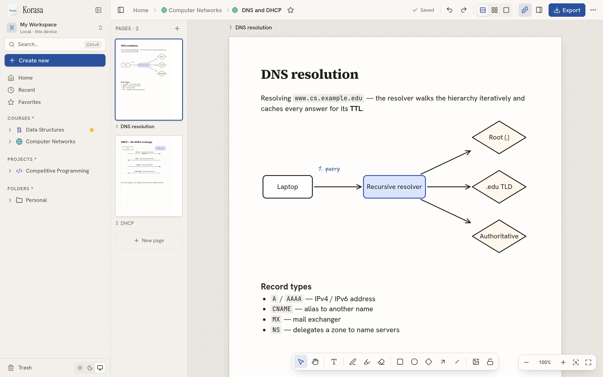
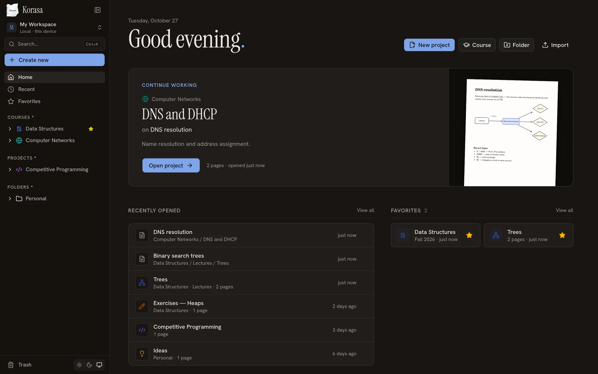

Real A4 pages
Plain, ruled, graph, dotted or bordered paper, portrait or landscape. Stack pages, lay them out freely, or focus on one.
Free · Offline · Windows, macOS & Linux
Korasa is a quiet place for your courses and projects. Write anywhere on real A4 pages, sketch diagrams, paste screenshots — and keep every note on your own computer.
What's inside
Plain, ruled, graph, dotted or bordered paper, portrait or landscape. Stack pages, lay them out freely, or focus on one.
Click on the page and type. Headings, lists, code, colours, highlights and sticky notes — all editable, all selectable.
Shapes, arrows and connectors that follow when you move things. Group, align, rotate, layer — like a whiteboard on paper.
Smooth freehand pen with pressure support for styluses, a highlighter for your notes, and an eraser that just works.
Ctrl/⌘+V a screenshot or drop images straight onto the page. Resize, rotate, caption and place them beside your notes.
Export a page or a whole project to A4 PDF with sharp vector text and shapes, or save pages as PNG.


Local-first
Korasa runs entirely on your computer. There is no account to create, no server to trust and nothing to sync unless you choose to copy your files.
Download
Pick your system below.
Windows 10 and 11 · 64-bit
Download .exemacOS 12 or later
64-bit · most distributions
Run the installer. Because Korasa isn't code-signed yet, SmartScreen may say “Windows protected your PC” — choose More info → Run anyway.
Open the .dmg and drag Korasa to Applications. On first launch macOS will block it because it isn't notarised: open System Settings → Privacy & Security and click Open Anyway.
AppImage: make it executable (chmod +x Korasa-linux-x86_64.AppImage) and run it. Debian/Ubuntu: sudo apt install ./Korasa-linux-amd64.deb.
Questions
Yes. Download it and use it — there's no subscription, trial or account.
In your user's app-data folder: %APPDATA%\Korasa on Windows,
~/Library/Application Support/Korasa on macOS and ~/.config/Korasa on Linux.
Uninstalling the app leaves your notes in place.
No. Korasa works fully offline and never sends your content anywhere.
Export a project as a .korasa.json file — it includes every page and image — and import it on the other machine. You can also copy the whole data folder.
Export any page or an entire project as an A4 PDF with sharp, selectable text, or save pages as PNG images.
Yes — the pen tool reads stylus pressure for natural-looking handwriting and sketches.